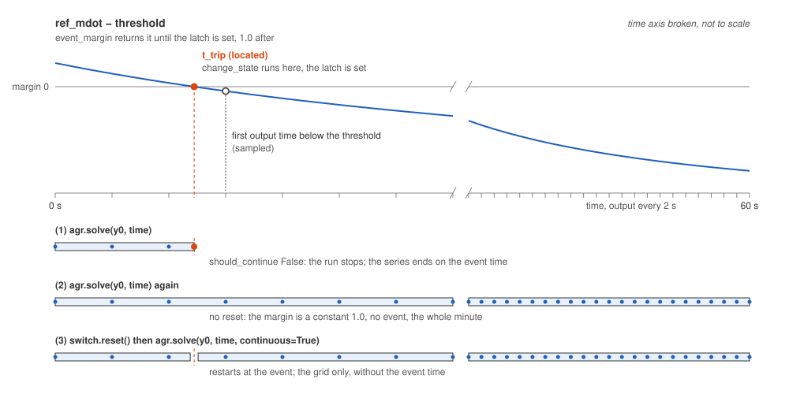

Trip, stop and restart
Run a transient and set tolerances runs the coastdown loop after its pump stops. This page adds to it a flow switch, a calculation whose event the solver locates in time; the page stops the run at the trip, reruns it without and with a reset, and runs once past the event. Add point kinetics, feedback and a trip covers the other kind of trip, a state machine polled at output times.
The import cell raises the library’s log level to errors, silencing the warning a stop logs; a real run leaves the level at its default.
[1]:
import logging
import numpy as np
from stream import Calculation, State, unpacked
from stream.calculations import Inertia, Junction, KirchhoffWDerivatives, Pump
from stream.composition import FlowGraph, ResistorFromKnownPoint, flow_edge
from stream.substances import light_water
from stream.units import hour
from stream.utilities import identity
logging.getLogger("stream").setLevel(logging.ERROR)
A switch with no rows
A calculation takes part in events through three hooks, each off by default. event_margin returns an array of margins, positive while no event is pending, that cross zero at the event; the solver locates that time. change_state runs at the located time, and should_continue returning False asks for the run to stop. The hooks receive what calculate receives, so a hook reading an input from another calculation takes @unpacked, as in Write a
calculation.

The first run stops at ``t_trip`` and ends on it, the second sees no event, the third restarts there and keeps only the grid.
FlowSwitch owns no rows. It watches ref_mdot and latches the first time that flow is at or below its threshold, recording the time. change_state runs on every calculation at every event, so it tests its own condition before acting. Once latched, the margin is a constant 1.0: a flow that recovers cannot fire the event again. By default a calculation takes part in events if and only if it overrides change_state or should_continue; one whose part depends on a runtime flag
overrides has_event to return that flag.
[2]:
class FlowSwitch(Calculation):
def __init__(self, threshold, name="FlowSwitch"):
self.name = name
self.threshold = threshold
self.reset()
def reset(self):
self.t_trip = np.inf
@property
def tripped(self):
return self.t_trip < np.inf
@property
def variables(self):
return {}
@property
def mass_vector(self):
return ()
def calculate(self, variables, **_):
return np.empty(0)
@unpacked
def event_margin(self, variables, *, ref_mdot, **_):
return np.array([1.0 if self.tripped else ref_mdot - self.threshold])
@unpacked
def change_state(self, variables, *, ref_mdot, t, **_):
if not self.tripped and ref_mdot <= self.threshold:
self.t_trip = float(t)
def should_continue(self, variables, **_):
return not self.tripped
Wire it to a flow
The switch reads the flow of the PCS edge through ref_mdot_for, as Wire a flow network does for a flapper, and the clock through funcs. A calculation with no rows still needs an entry in the guess, here an empty one. The threshold is 85 % of the nominal flow.
[3]:
T, head, inertia = 20.0, 1.6e5, 8e3
mdot0 = 2000 / hour * float(light_water.density(T))
pump = Pump(pressure=head, name="Pump")
flywheel = Inertia(inertia=inertia, name="Flywheel")
pcs = ResistorFromKnownPoint(dp=-head, mdot=mdot0, behavior="parabolic", Tin=T, fluid=light_water, name="PCS")
switch = FlowSwitch(threshold=0.85 * mdot0)
a, b = Junction(name="A"), Junction(name="B")
fg = FlowGraph(
flow_edge((a, b), pump, flywheel),
flow_edge((b, a), pcs, ref_mdot_for=(switch,)),
funcs={pcs: {"Tin": T}, switch: {"t": identity}},
inertial_comps=[flywheel],
k_constructor=KirchhoffWDerivatives,
)
agr, K = fg.aggregator, fg.kirchhoff
guess = State.merge(fg.guess_steady_state({pump: mdot0, pcs: mdot0}, T), {switch.name: {}})
y0 = agr.solve_steady(guess)
row = agr.var_index(K, K.component_edge(pcs))
print(f"rows of the switch: {len(switch)}")
print(f"steady flow: {y0[row]:.2f} kg/s")
print(f"tripped: {switch.tripped}")
pump.p = 0.0
rows of the switch: 0
steady flow: 554.42 kg/s
tripped: False
The steady solve leaves the switch unlatched: solve_steady never calls the hooks.
Stop at the trip
The run asks for an output every 2 s over a minute. Inverting the coastdown flow of Run a transient and set tolerances gives the crossing by hand, \(t = (\dot m_0 / \dot m_\mathrm{trip} - 1) / (\alpha \dot m_0)\).
[4]:
time = np.arange(0.0, 61.0, 2.0)
alpha = abs(pcs.dp_out(mdot=1.0, Tin=T)) / inertia
first = agr.solve(y0, time)
print(f"located trip: {switch.t_trip:.4f} s")
print(f"by hand: {(1 / 0.85 - 1) / (alpha * mdot0):.4f} s")
print(f"output times: {np.round(first.time, 3)}")
print(f"flow at the end: {first.data[-1, row] / mdot0 * 100:.2f} % of nominal")
located trip: 4.8919 s
by hand: 4.8919 s
output times: [0. 2. 4. 4.892]
flow at the end: 85.00 % of nominal
The solver locates the trip at about 4.89 s, and the hand estimate agrees to the printed digits. The run stops there and ends its series on the event time, at the threshold.
Run it again
The latch lives on the Python object, and solve neither saves nor restores it.
[5]:
stale = agr.solve(y0, time)
print(f"rows without reset: {len(stale.time)} of {len(time)}, trip at {switch.t_trip:.4f} s")
switch.reset()
print(f"after reset: tripped = {switch.tripped}")
rows without reset: 31 of 31, trip at 4.8919 s
after reset: tripped = False
Latched, the switch lets the second run cover the minute and report the first trip, so each run needs a reset first. The library’s latches reset the same way: Flapper.close() clears a flapper’s latch and Flapper.open(t) sets it at a chosen time; the controller’s reset() is on the kinetics page.
Restart past the event
continuous=True makes a stop request restart the solver from the event. The cell compares the located and the sampled crossing.
[6]:
carried = agr.solve(y0, time, continuous=True)
sampled = carried.time[np.argmax(carried.data[:, row] <= switch.threshold)]
print(f"rows: {len(carried.time)} of {len(time)}")
print(f"located trip: {switch.t_trip:.4f} s")
print(f"sampled crossing: {sampled:.1f} s")
rows: 31 of 31
located trip: 4.8919 s
sampled crossing: 6.0 s
The run covers the minute without the event time. The located trip is the first run’s 4.89 s; the sampled one is 6 s. A located time is good to the solver’s tolerance, a sampled one to the output step, as How far to trust the event times measures.
When a channel saturates
A channel built with stop_at_saturation=True has one margin per cell, its saturation temperature less its bulk temperature, and its change_state raises SaturationReachedError at the crossing. An error raised at an event carries the trajectory up to and including the event time as its t and y, so catching it keeps the run up to the stop, as A stuck flapper does.
Both Pumps Trip locates a low-flow trip and a flapper opening in an hour-long transient. The usual next task: Diagnose a failing solve.